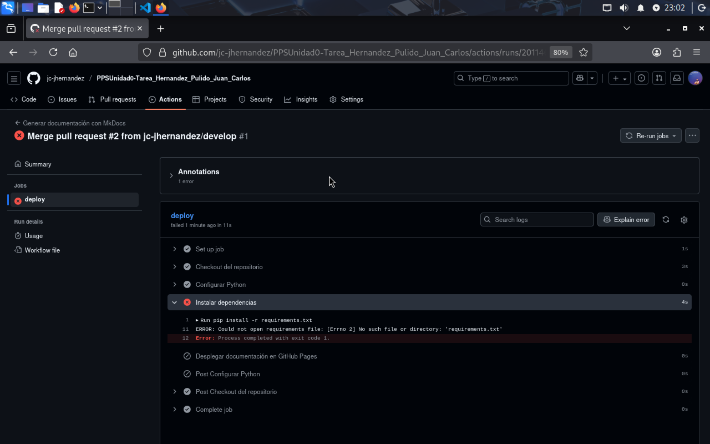
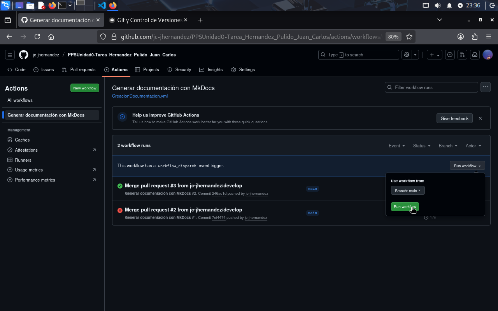

GitHub Actions - Automatización de Documentación¶
Índice¶
- Introducción
- Estructura del Workflow
- Creación del archivo workflow
- Explicación del workflow
- Configuración de permisos
- Activación del workflow
- Verificar ejecución
- Verificación rama gh-pages
- Ejecución manual
- Solución de problemas
- Comandos útiles
Introducción¶
GitHub Actions automatiza el proceso de generar y publicar la documentación. Cada vez que hago push a main, se ejecuta un workflow que:
- Genera la documentación con MkDocs
- La publica en GitHub Pages (rama
gh-pages) - Todo automático, sin intervención manual
Estructura del Workflow¶
El workflow está en:
Componentes básicos: - name: Nombre del workflow - on: Cuándo se ejecuta - jobs: Qué hace - steps: Pasos concretos
Creación del archivo workflow¶
Creo el archivo workflow con nano:
Y lo relleno con este contenido:
name: Generar documentación con MkDocs
on:
push:
branches:
- main
workflow_dispatch:
permissions:
contents: write
jobs:
deploy:
runs-on: ubuntu-latest
steps:
- name: Checkout del repositorio
uses: actions/checkout@v4
- name: Configurar Python
uses: actions/setup-python@v5
with:
python-version: 3.x
- name: Instalar dependencias
run: |
pip install -r requirements.txt
- name: Desplegar documentación en GitHub Pages
run: mkdocs gh-deploy --force

Explicación del workflow¶
Triggers¶
Se ejecuta cuando hago push a main. El workflow_dispatch permite ejecutarlo manualmente desde GitHub si hace falta.
Permisos¶
Necesita permisos de escritura para crear/actualizar la rama gh-pages.
Job¶
Corre en Ubuntu. GitHub proporciona la máquina virtual gratis.
Steps¶
1. Checkout: Descarga el código del repo
2. Setup Python: Instala Python 3.x
3. Install dependencies: Instala MkDocs desde requirements.txt
4. Deploy: Genera la doc y la sube a gh-pages
El comando mkdocs gh-deploy --force hace todo: genera el HTML, crea/actualiza la rama gh-pages, y sube los cambios.
Configuración de permisos¶
IMPORTANTE: Antes de hacer el merge a main, tengo que configurar los permisos en GitHub.
Pasos:
- Ir al repositorio en GitHub
- Settings > Actions > General
- Scroll down hasta Workflow permissions
- Seleccionar: Read and write permissions
- Save

Sin esto, el workflow falla al intentar crear la rama gh-pages.
Activación del workflow¶
Ya he generado el archivo workflow, así que lo añado al repositorio y subo:
git add .github/workflows/CreacionDocumentacion.yml docs/gitActions.md
git commit -m "Add: GitHub Actions workflow y documentación"
git push origin develop

Una vez hago el merge a main (mediante PR), el workflow empieza a funcionar.
gh pr create \
--base main \
--head develop \
--title "Tarea RA5 - Aplicación mkdocs" \
--body "## Resumen de cambios
Esta PR incluye primeros pasos de la tarea RA5:
### ✅ Completado
- [x] Estructura del repositorio creada
- [x] Documentación en Markdown (index, git, gitActions, gitPages, docker, conclusiones)
- [x] Configuración de MkDocs (mkdocs.yml)
- [x] Workflow de GitHub Actions para documentación automática
- [ ] Configuración de GitHub Pages
- [ ] Instrucciones de Docker/Docker Compose para NGINX
- [x] Archivos de configuración (.gitignore, requirements.txt)"
gh pr merge 2 --merge
Verificar ejecución¶
Después del merge, voy a:
- Repositorio en GitHub
- Pestaña Actions
- Ver el workflow ejecutándose
Estados: - 🟡 Amarillo: Ejecutándose - 🟢 Verde: Completado - 🔴 Rojo: Error

Puedo ver un error porque no he completado el contenido del fichero requirements.txt.
Para solucionarlo, hago uso del mkdocs en local
Resultado en local:
Vuelvo a realizar PR a producción con todos los cambios. En ese caso ya conseguimos


Observamos el detalle del workflow realizado con éxito y sus pasos:

Verificación rama gh-pages¶
Después de la primera ejecución exitosa, verifico que se creó la rama gh-pages:


Ejecución manual¶
Si necesito forzar una ejecución sin hacer push:
- Actions en GitHub
- "Generar documentación con MkDocs"
- Run workflow
- Seleccionar rama (main)
- Run workflow
